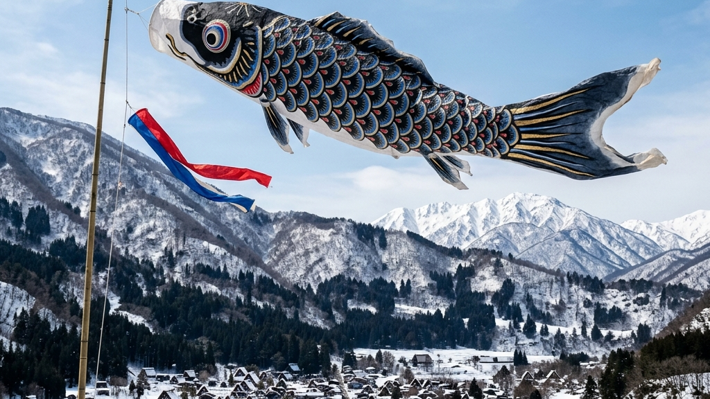
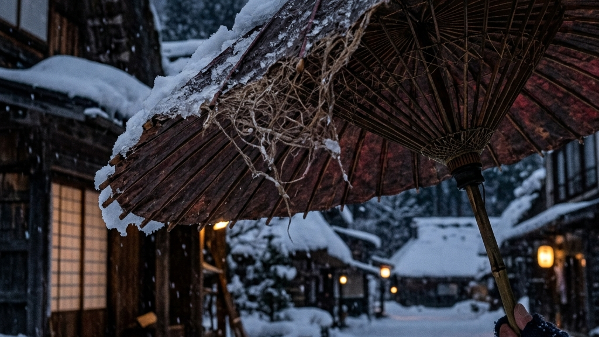
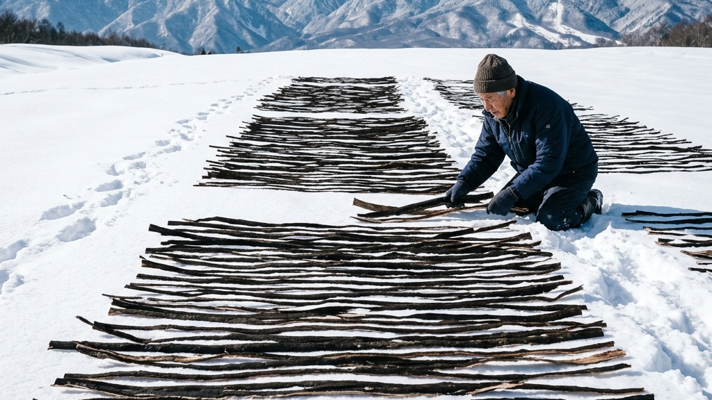
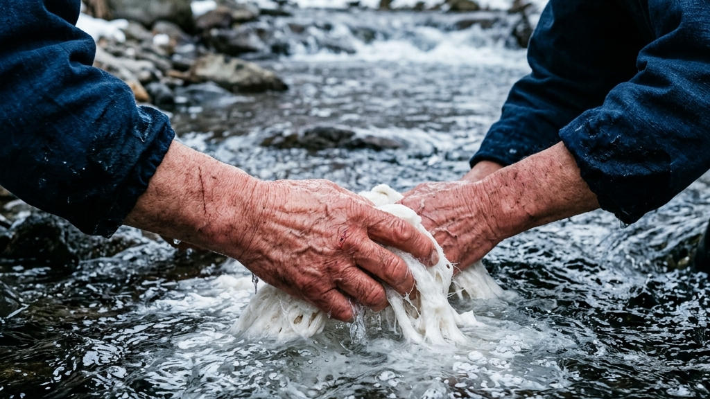
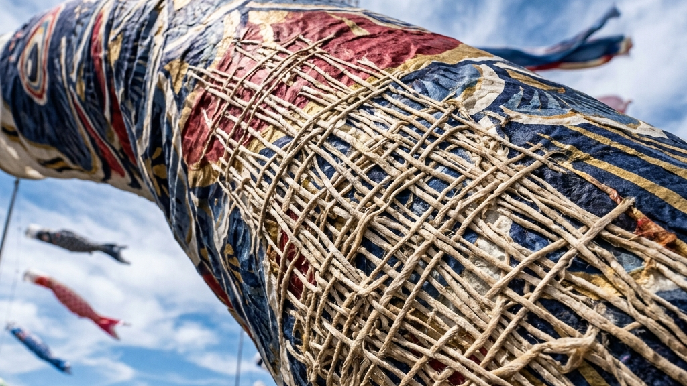
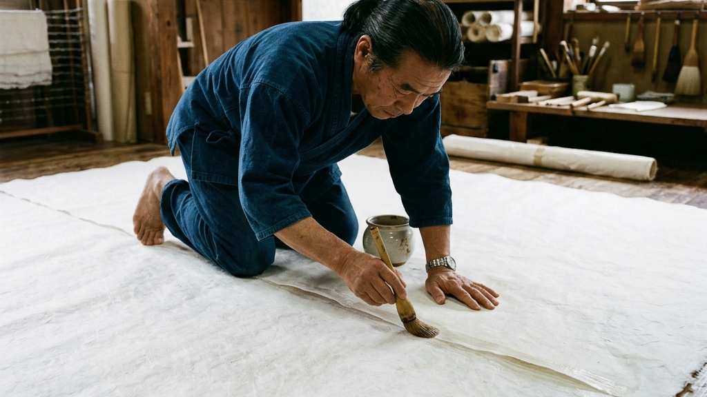
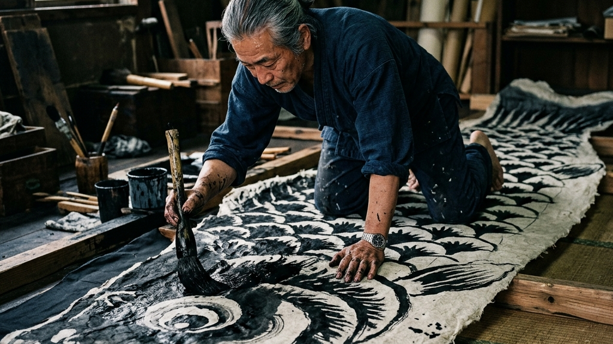
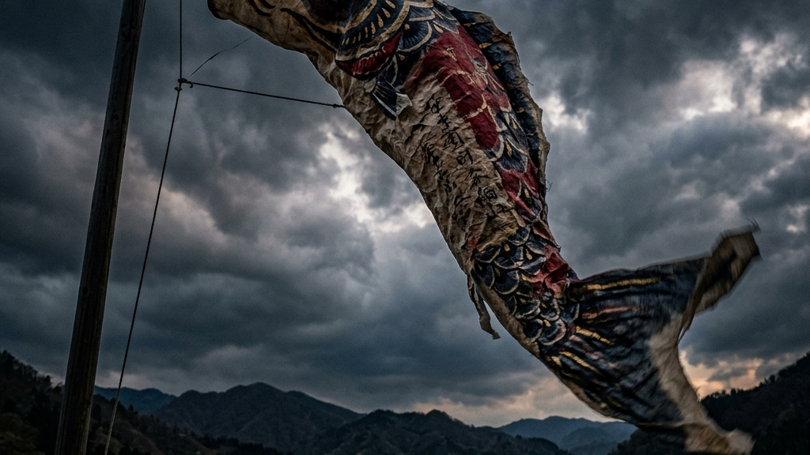

飛騨高山の厳冬。刺さるような冷気と分厚い雪に閉ざされた世界の中で、800年もの間、沈黙とともに漉き続けられてきたマテリアルがある。岐阜県飛騨市河合町で受け継がれる伝統工芸「山中和紙（やまなかわし）」。春の訪れを告げるように「飛騨の里」の空を舞う全長9.5メートルの巨大なこいのぼりは、薄くしなやかな和紙がいかにして暴力的なまでの物理的強度を獲得しているかを、私たちにまざまざと突きつける。
【本稿で紐解く3つの核心】
現代のビジネスや製造業において、「効率化」と「最適化」は絶対的な善であるとされている。どれだけ短時間で、どれだけ安価に、どれだけ均質化されたプロダクトを大量生産できるか。その合理的なロジックは、たしかに私たちの生活を豊かにし、あらゆる無駄な摩擦を消し去ってきた。しかし、その波風の立たない平滑な世界で、私たちは本当に「強いもの」を生み出せているのだろうか。システムがすべてを自動化し、痛みを伴うプロセスを省略するようになった今、私たちは泥臭く対象と向き合うことでしか得られない「思考体力」や「手触り」を急速に失いつつある。
岐阜県最北端に位置する飛騨市河合町。一年の三分の一が雪に覆われるこの過酷な土地で生み出される山中和紙は、現代の合理主義に対する痛烈なアンチテーゼである。彼らの手仕事には、効率化という概念が存在しない。凍てつく川の水に手を入れて原料を洗い、深い雪原に楮（こうぞ）を並べて自然の力に身を委ねる。それは、気温や天候というコントロール不可能な自然の暴力との絶え間ない対話であり、予測不可能なエラー（摩擦）を全身で受け止める狂気のようなプロセスだ。しかし、この極限の摩擦の中でしか、あの巨大なこいのぼりを形作る強靭なマテリアルは決して生まれないのである。私たちは、手仕事という極めて属人的な行為が持つ「不確実性」こそが、素材のポテンシャルを極限まで引き上げる最強のトリガーであることを知らなければならない。
飛騨高山の観光名所「飛騨の里」で春風をはらみ、悠然と空を泳ぐ全長9.5メートルの巨大こいのぼり。その目つきや鱗（うろこ）には、機械印刷では決して出せない独特の風合いと、職人の荒々しい息遣いが宿っている。巨大な質量と風の張力に耐えうるその和紙は、単なる「伝統的な素材」という枠を超え、現代人が忘却した「自然の脅威を美しさに変換する力」を内包している。私たちは、この途方もなく非効率なプロセスの中に、ビジネスや組織論においても決して見失ってはならない「摩擦と成長のパラドックス」を見出すことができる。効率を追い求めた先にある均質な虚無に抗うように、山中和紙は圧倒的な実力と物理法則をもって、真のラグジュアリーとは何かを無言で問いかけているのだ。

山中和紙が今日まで生き延びてきた最大の理由は、それが決して一部の権力者や貴族のための「装飾品（アート）」として特化しなかったからである。飛騨市河合町という雪深く厳しい自然環境の中で、彼らはひたすらに「雪国の生活に耐えうる頑丈な道具」としての和紙を追求し続けた。それは雪風を凌ぐための強靭な障子紙であり、過酷な雨を弾く番傘であり、時には直接肌に触れる防寒具としての役割すら担った。
京都や越前などの華やかな産地とは異なり、飛騨の厳しい冬を乗り越えるためのサバイバル・マテリアルとして和紙の技術が土着化。実用本位の生産が始まる。
農閑期の貴重な収入源として、河合町周辺の多くの家々で和紙が漉かれ、障子や傘紙として飛騨全域の生活インフラを根底から支える。
この「用の美」への徹底した執着こそが、およそ800年にもわたってこの地に和紙づくりを定着させ、時代を超えて受け継がせてきた根源的な原動力である。現代における「用の美」とは、単なるレトロな道具への郷愁ではなく、圧倒的な自然環境との摩擦を生き抜くために極限まで研ぎ澄まされた「機能美の究極形態」を意味する。アノニマスの痕跡と不完全なる美。時間を吸収する工芸が切り拓く、新たな審美の地平においても論じたように、名もなき飛騨の民衆たちが自らの生存をかけて自然と格闘した痕跡そのものが、現代においては一種の極限のアートピースへと昇華されているのである。

極寒の飛騨において、和紙づくりは単なる製造工程ではなく、自然環境との過酷なセッションである。山中和紙の最大の特長である強靭な物理的強度は、化学薬品による漂白を一切拒絶し、「雪晒し（ゆきさらし）」という伝統的な自然のメカニズムを採用している点に完全に依存している。
原料となるのは、河合町周辺で自生・栽培される良質な楮（こうぞ）である。秋に刈り取られた楮は、皮を剥がれ、大鍋で煮上げられた後、真冬の雪原に広げられる。これが「雪晒し」の過酷な幕開けである。ただ雪の上に置くだけではない。太陽の紫外線が雪の表面に降り注ぐと、雪が融解する過程で微量のオゾンが発生する。このオゾンが持つ強力な酸化作用によって、楮の繊維に含まれる不純物や色素がゆっくりと、しかし確実に分解されていくのだ。
「自然の暴力に抗うのではなく、その圧倒的なエネルギーを繊維の奥深くに定着させる。雪と氷こそが、和紙を鍛え上げる最強の鎚（つち）となる。」
— 山中和紙に宿るマテリアルの哲学
現代の製紙工場であれば、次亜塩素酸などの化学薬品を用いてわずか数時間で終わらせる漂白工程を、山中和紙の職人たちは雪と太陽というコントロール不可能な自然のペースに合わせ、天候を見極めながら何日もかけてじっくりと行う。この途方もない非効率こそが、繊維を一切傷めず、楮本来の長くて強靭な細胞構造を完璧な状態で残す絶対条件なのである。効率化という名の近道を選べば、確かに白い紙は一瞬で手に入るかもしれない。しかし、その代償として繊維はボロボロに引きちぎられ、巨大なこいのぼりを支えるだけの靱性は永久に失われてしまうのだ。

さらに、極寒の気温そのものが和紙の強度を決定づける。雪晒しを終えた楮の繊維は、川の冷水で徹底的に洗い流される。水温が限界まで下がる冬場の清流は、人間の手足を麻痺させるほどの冷たさだが、和紙にとっては最高のコンディションである。なぜなら、極寒の水は繊維をキュッと引き締めるだけでなく、水中の雑菌の繁殖を完全に抑え込むからだ。
不純物のない氷のように冷たい水で漉き上げられた和紙は、乾燥の過程で繊維同士が緻密に絡み合い、和傘や障子紙、さらには防寒具にまで用いられるほどの圧倒的な靱性（じんせい）を獲得する。手がちぎれるほどの冷たさに耐えながら、一枚一枚の和紙を漉きあげる職人たちの身体的な苦痛と執念。彼らは、自らの肉体に直接的なダメージ（摩擦）を受け入れながら、ただひたすらに良質なマテリアルを生み出すためだけに凍てつく水と格闘し続ける。
「効率」という名の無菌室で育ったプロダクトには、決してこの「寒さ」や「痛み」は宿らない。凍てつく雪原に晒され、厳しい自然の摩擦を耐え抜いたからこそ、山中和紙はただ美しいだけでなく、巨大な構造物を空に泳がせるだけの暴力的なまでの実力を手に入れるのだ。そこには、逃げ場のないプレッシャーの中でしか本物の強度（思考体力）は育たないという、真のマネジメントにも通ずる泥臭い絶対法則が横たわっている。我々は、この古来より伝わる「雪晒し」と「冷徹な水洗い」という技術の中に、失われた人間の野性と、自然と共犯関係を結ぶことでのみ到達できる真のラグジュアリーの形を確信するのである。

飛騨の里の空を舞う全長9.5メートルの巨大なこいのぼり。その壮大なスケール感は、単なる視覚的な驚きを超えて、ひとつの純粋な力学的な問いを投げかける。大空で吹き荒れる強風を受け止めた際、その巨大な質量が生み出す「張力（引張荷重）」は計り知れない。一般的な障子紙や半紙であれば、空に掲げられた瞬間にビリビリと破け、四散してしまうだろう。しかし、山中和紙で作られたこのこいのぼりは、その暴力的なまでの風圧を正面から受け止め、しなやかに風を逃がしながら空を泳ぎ続けるのである。
この異常とも言える物理的強度の源泉は、前述した雪晒しと冷徹な水洗いによって傷一つなく保存された「楮（こうぞ）の極長繊維」が、幾重にも複雑に交差するその独特な構造にある。和紙を漉く際、職人は「ネリ（トロロアオイなどの粘液）」を用い、冷徹な水の中で簾（すだれ）を激しく揺する。この物理的なアクションによって、長い繊維同士が縦横無尽に絡み合い、現代のハイテク素材であるリップストップ（裂け止め）ナイロンにも匹敵する構造的ネットワークを形成するのだ。
| 対象・素材 | 物理的性質（構造） | 概念的特長・用途 |
|---|---|---|
| 近代的な機械抄き和紙 | 短く切断された繊維の均質な配列 | 大量生産の効率化。書道や一般的な包装に最適。 |
| 山中和紙（雪晒し手漉き） | 極長繊維の多次元的な絡み合い | 圧倒的な靱性と耐候性。巨大構造物や防寒具への適用。 |
機械抄き和紙の場合、機械のノズルを通すために楮の繊維を短く切断しなければならない。均質で美しい仕上がりにはなるものの、繊維同士の絡み合いが弱く、少しの傷から一気に破断が広がる。一方で、山中和紙は繊維を切断せず、自然の長さのまま漉き上げる。極めて不均質でありながら、圧倒的なネットワークで結ばれたその物理的構造は、強風による巨大なストレスをキャンバス全体へ均等に分散させる働きを持つ。これこそが、9.5メートルの巨体を空中に繋ぎ止める「張力」の正体なのである。

山中和紙がいかに強靭とはいえ、一枚の和紙のサイズには物理的な限界がある。9.5メートルの巨大こいのぼりを作り上げるためには、何十枚もの手漉き和紙を狂いのない精度で繋ぎ合わせ、巨大な一枚のキャンバスへと構築していく工程が不可欠である。ここにも、職人たちの譲れない哲学と極限の「摩擦」が潜んでいる。
現代の製造工程であれば、強力な化学接着剤やボンドを用いて素早く、そして強固に接合するのが常識である。しかし、山中和紙の職人たちは化学のりを一切拒絶し、昔ながらの天然の糊（のり）を用い続ける。化学的な接着剤は強力であるがゆえに、乾燥後に接合部だけがプラスチックのようにカチカチに硬化してしまうという決定的なデメリットを持つ。接合部が硬化するということは、そこが「柔軟性のない壁」になり、風を受けた際に力が集中する応力集中点（破断の起点）になってしまうことを意味する。
Core Principles of the Network
天然の糊で接合された和紙は、乾燥した後もキャンバス全体と全く同じようにしなやかに伸縮し、風の力を美しく逃がす。これは、鎌打ち神事と鳥居再建 中能登町・鎌宮諏訪神社が示す復興の形においても語られるように、強風や災害といった外的な暴力に対して「剛」で対抗するのではなく、「柔」でいなすという日本の伝統的な建築・工芸に通底する哲学である。
しかし、天然糊を用いた巨大な接合は、職人にとって途方もない神経のすり減る作業である。湿度や気温によって乾き具合が刻一刻と変化し、少しでも油断すれば皺（しわ）が寄り、そこから破れが生じてしまう。職人たちは広大な和紙の上に這いつくばり、指先の感覚だけを頼りにミリ単位で紙の目線を合わせ、滑らかに糊を伸ばしていく。この自らの肉体を酷使し、極度の緊張感を強いられる非効率なプロセスの中にこそ、AIや機械には決して宿ることのない「生命の息吹」が吹き込まれていくのである。

強靭な巨大キャンバスとして縫合された山中和紙に対して、次に行われるのが「描画」のプロセスである。9.5メートルという規格外のスケールを持つこいのぼりの目つきや鱗（うろこ）は、工場のようなベルトコンベアの上で印刷されるわけではない。職人たちが広大な和紙の上に直接這いつくばり、極太の筆を使って、墨や顔料を全身の力で叩きつけるように描いていくのだ。
この描画という行為は、単なるデザインの付加ではない。大空を彩る息吹のかけら。加須市の職人が手ぬぐいに描き出す「こいのぼり」の系譜と美学においても触れたように、空を舞うモチーフを描くという作業は、布や和紙という物理的な物質に対して「生命の息吹」を吹き込む神聖な儀式に他ならない。とりわけ山中和紙の表面は、機械でプレスされた紙のように均質で平滑ではない。太く長い楮（こうぞ）の繊維が複雑に絡み合ったまま残されているため、筆を滑らせるたびに強烈な抵抗（摩擦）が生まれ、顔料は繊維の隙間へと不規則に吸い込まれていく。
その結果、描かれた線には必然的に「にじみ」や「かすれ」といったノイズが生じる。現代の精密なインクジェットプリンターから見れば、これは明らかな「エラー」であり「不良品」である。しかし、彼らはこのエラーを修正しようとはしない。むしろ、筆の勢いや繊維の抵抗が生み出すそのコントロール不可能なノイズこそが、巨大なこいのぼりに獰猛な生命力を宿らせる「息吹」であることを熟知しているのである。職人が自らの肉体的限界と闘いながら、極寒の雪晒しで鍛え上げられた野性味あふれる和紙に荒々しく筆を振るう。この人間と自然素材との激しい格闘（セッション）の痕跡が、飛騨の里の空を泳ぐこいのぼり特有の、あの圧倒的な存在感を生み出しているのだ。

すべてを手作業で行い、コントロール不可能な自然環境に身を委ねる山中和紙のプロセスは、現代の生産管理の視点から見れば、狂気の沙汰とも言える非効率の極みである。風雨に晒されればいずれ劣化する運命にあるものに対し、なぜ彼らはこれほどの異常な熱量と時間を注ぎ込むのか。その答えは、職人たちが「完成品という結果」だけを求めているのではなく、「和紙というマテリアルを通じて自然の暴力と対峙するプロセス」そのものに価値を見出しているからに他ならない。
彼らは、余分なプロセスを削ぎ落として「効率」を手に入れる代わりに、自らの肉体というノイズを通じて素材と深く交わる道を選んだのだ。【着るアートと伝統工芸】消費から継承へと昇華する「一点物」のラグジュアリー哲学でも触れたように、現代の真のラグジュアリーとは、もはや大量生産された均質なブランドロゴを身に纏うことではない。それは、この山中和紙のように、途方もない非効率と肉体的な摩擦を乗り越えて蓄積された「目に見えない知層と時間」を所有し、自らの手で次の時代へと継承していくという精神的なホスピタリティの中にこそ宿るのである。
私たちが飛騨の里で春風に舞う巨大なこいのぼりを見上げる時、そこに浮かび上がっているのはただの物理的な和紙の塊ではない。それは、雪国という過酷な自然環境に決して屈することなく、むしろその自然の猛威すらも巧みに味方につけて素材を鍛え上げてきた飛騨の人間たちの「不屈の魂の結晶」である。現代の私たちがスマートフォンをタップし、ボタン一つで手に入れる便利さの陰で、彼らは今日も凍てつく川に足を踏み入れ、冷たい雪の上に丁寧に楮を晒す。この狂気にも似た非効率な手仕事の連続にこそ、何百年もの時間を超えて受け継がれるべき「人間の本質的な強さ」が隠されている。
効率よく最適化された美しい答えを手に入れるのは簡単だ。しかし、真に価値あるものは、極寒の川で凍えながら楮を晒すような、愚直で非効率なプロセスの果てにしか待っていない。ビジネスにおいても、人間関係においても、我々はもう一度この「摩擦」を恐れずに向き合う必要がある。山中和紙というマテリアルが内包する物理的な靱性は、そのまま、この不確実な世界を泥臭く生き抜くための「精神的な防波堤」として、今を生きる私たち一人ひとりの生き方に深く、そして静かに問いかけてくるのだ。波風の立たない無菌室に、強い人間は決して育たない。その泥臭い闘いの連鎖だけが、次なる1,000年の知層を織りなすのである。
Reference:
全長9.5メートル 和紙で作った｢巨大こいのぼり｣ 伝統工芸“山中和紙” 目つきやうろこは独特の風合いが 岐阜･高山市｢飛騨の里｣
伝統を身に纏い、1,000年先の未来へ遺す。Kakeraが織り上げる西陣織アロハシャツの哲学と私たちの物語は、CONCEPT、Kakera Aloha、およびABOUTよりご覧いただけます。